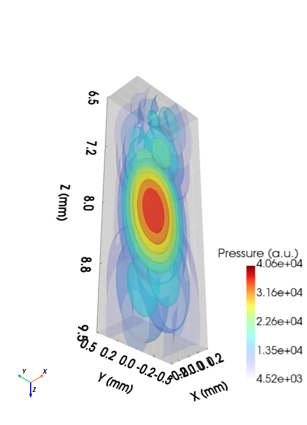
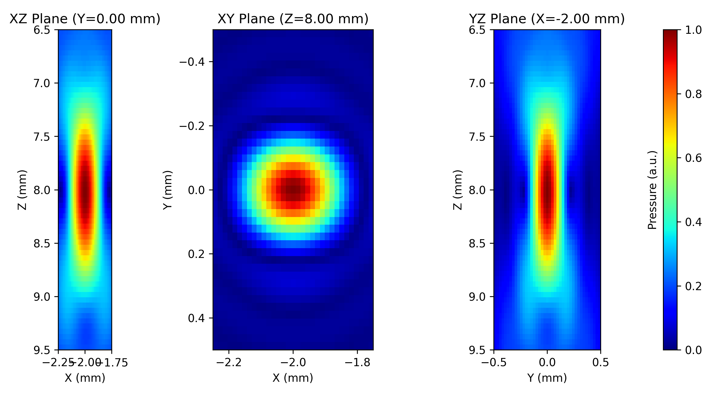
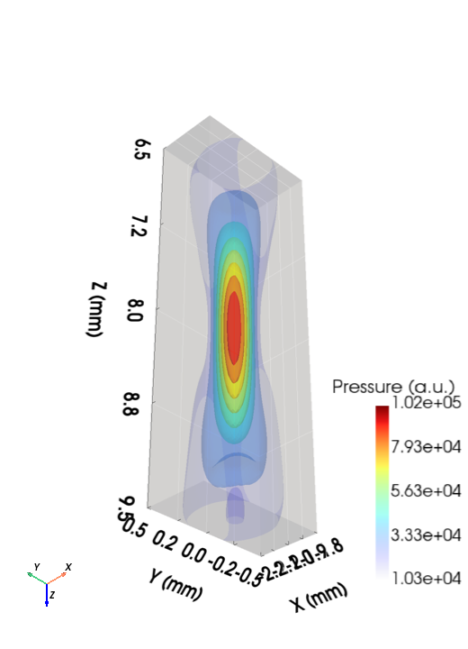

Simulation¶
PyField¶
PyField wraps the SIR kernel and provides a callable interface.
from pyfield.psimulation import PyField
sim = PyField(transducer)
x_out, y_out, z_out, pressure = sim(field_points_mm, method="auto")
Arguments¶
| Parameter | Type | Description |
|---|---|---|
transducer |
TransducerBase |
Any configured transducer |
__call__(field_points_mm, *, method, excitation)¶
| Parameter | Type | Description |
|---|---|---|
field_points_mm |
(N,3) ndarray |
Field point coordinates in mm |
method |
str |
"naive", "SDI", or "auto" |
excitation |
ndarray or None |
Excitation pulse for transient simulation |
Return values
| Symbol | Shape | Description |
|---|---|---|
x_out, y_out, z_out |
1-D | Unique coordinate axes extracted from field_points_mm |
pressure |
(Nx,Ny,Nz) or (Nt,Nx,Ny,Nz) |
Pressure field |
Methods¶
| Name | Description |
|---|---|
"naive" |
Direct evaluation — O(M·P) |
"SDI" |
Sub-aperture decomposition — same result, faster for dense grids |
"auto" |
Picks the faster method based on M and P |
Monochromatic simulation¶
Set up the transducer and call without an excitation signal. The output is a 3-D complex pressure field (envelope).
Linear array — XZ plane (Domino probe)

Linear array — 3-D isosurface view (TX + pressure)

Matrix array — three orthogonal planes (Zeus_Matrix)

Matrix array — 3-D isosurface view (TX + pressure)

Transient simulation¶
Pass a time-domain excitation pulse. The output is a 4-D real pressure field with time along axis 0.
import numpy as np
fs = 100e6 # sampling frequency
fc = tx.fc # centre frequency
n_cycles = 3
t_pulse = np.arange(0, n_cycles / fc, 1 / fs)
excitation = np.sin(2 * np.pi * fc * t_pulse) * np.hanning(len(t_pulse))
x, y, z, p = sim(pts_mm, method="auto", excitation=excitation)
# p.shape == (Nt, Nx, Ny, Nz)
Field grid helper¶
Build a dense 3-D grid of points:
import numpy as np
x = np.linspace(-5, 5, 40)
y = np.array([0.0]) # single plane
z = np.linspace(5, 60, 120)
pts = np.array(np.meshgrid(x, y, z)).T.reshape(-1, 3)
Delta-k diagnostic¶
After a simulation, inspect sim.sub_elem_delta_k to verify the SIR
accuracy condition for every patch and field point. Use
plot_deltak_distribution(sim) for a visual summary.